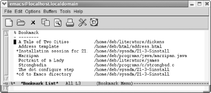
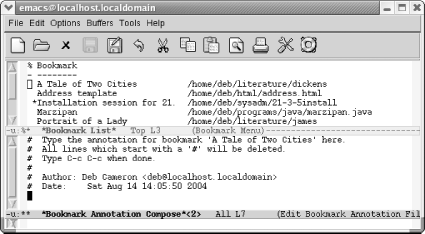

{% include JB/setup %}
{% raw %}
<div>
<div class="book" xml:lang="en"><div class="book"><div class="book"><div class="book"><h1 class="title"><a id="gnu3-CHP-4-SECT-7" class="calibre1"></a>Holding Your Place with Bookmarks</h1></div></div></div><p class="copyright">Once you start working with
<a id="gnu3-CHP-4-ITERM-2104" class="calibre2"></a>multiple files,
remembering just where you were in each one becomes harder. Bookmarks
provide a convenient way of marking your place in a file, a place you
can easily return to. You might, for example, be working with a file
that has a long pathname. Rather than retype the pathname each time
you start Emacs, you could just jump to a bookmark
you've named <span><em class="calibre7">current project</em></span> by
having Emacs find the file and put the cursor wherever you set the
bookmark.</p><p class="copyright">Bookmarks make the process of finding your place in any file easier.
Particularly if you are working on a project several directories down
from your home directory or in a totally different filesystem,
putting bookmarks in the file makes it easy to get back there.</p><p class="copyright">When you create a bookmark, Emacs creates a bookmark file in your
home directory, called <span><em class="calibre7">.emacs.bmk</em></span>. It saves any
new bookmarks in this file automatically when you exit Emacs.</p><p class="copyright">Bookmarks are stored by user. If you and others access the same
online documentation set, you can hold your place with your bookmark
and they can hold their places with theirs, never interfering with
each other's reading.</p><p class="copyright">From the Edit menu, you can access the Bookmarks menu, which lists
all the bookmark commands you'll probably ever need.
We feel the menu interface for bookmarks is particularly well
developed; even if you don't normally use menus, you
might want to make an exception in this case. (At least until you
learn the commands. Bookmarks are addictive, and when you use them
frequently, the commands are easier to type than to reach by menu.)</p><div class="book" xml:lang="en"><div class="book"><div class="book"><div class="book"><h2 class="title1"><a id="gnu3-CHP-4-SECT-7.1" class="calibre1"></a>Setting Bookmarks</h2></div></div></div><p class="copyright">To place a bookmark at the
<a id="gnu3-CHP-4-ITERM-2105" class="calibre2"></a>cursor
position, type <span><strong class="calibre5">C-x r m</strong></span> (for
<span><strong class="calibre5">bookmark-set</strong></span>). Emacs asks for a
bookmark name, which can be virtually any length (practically
speaking, as long as the width of your display) and can include
spaces (so <code class="calibre21">current project</code> or <code class="calibre21">Moore
proposal's greatest flaw</code> or
<code class="calibre21">Othello Act 2 Scene 4</code> would all be fine). Emacs
also puts a default bookmark in parentheses, suggesting the filename
if you haven't used a bookmark during this session
(in which case it uses the bookmark name). Either press <span><strong class="calibre5">Enter</strong></span> to accept the default or type a bookmark
name and then press <span><strong class="calibre5">Enter</strong></span>. You now
have a bookmark you can jump to at any time, in any Emacs session.</p><p class="copyright">One subtlety: if you give a new bookmark the same name as an old one,
Emacs assumes you just want to move the bookmark, even if it was
formerly in another file. So remember to make bookmark names unique
unless you are really trying to move them.</p></div><div class="book" xml:lang="en"><div class="book"><div class="book"><div class="book"><h2 class="title1"><a id="gnu3-CHP-4-SECT-7.2" class="calibre1"></a>Moving to a Bookmark</h2></div></div></div><p class="copyright">To move to a bookmark,
<a id="gnu3-CHP-4-ITERM-2106" class="calibre2"></a>
               <a id="gnu3-CHP-4-ITERM-2107" class="calibre2"></a>
               <a id="gnu3-CHP-4-ITERM-2108" class="calibre2"></a>
               <a id="gnu3-CHP-4-ITERM-2109" class="calibre2"></a>press <span><strong class="calibre5">C-x r
b</strong></span> (for <span><strong class="calibre5">bookmark-jump</strong></span>).
Type the bookmark's name, or type the first few
letters and press <span><strong class="calibre5">Tab</strong></span>. Emacs either
finishes the bookmark's name or gives you a window
of possible choices. Press <span><strong class="calibre5">Enter</strong></span>
after the bookmark's name appears. Emacs retrieves
the file and places the cursor at the bookmark location; the file is
retrieved no matter how complicated its path is.</p><p class="copyright">With menus, there's an easier way to move to a
bookmark. When you select Edit <span>→</span> Bookmarks<span>→</span> Jump to
Bookmark, Emacs displays a window of available bookmarks. Select the
bookmark you want, and Emacs displays the file with the cursor in the
bookmark's position. This is useful if you have set
many bookmarks, but we prefer to stick with the keyboard as much as
possible.</p></div><div class="book" xml:lang="en"><div class="book"><div class="book"><div class="book"><h2 class="title1"><a id="gnu3-CHP-4-SECT-7.3" class="calibre1"></a>Renaming and Deleting Bookmarks</h2></div></div></div><p class="copyright">You may find that
<a id="gnu3-CHP-4-ITERM-2110" class="calibre2"></a>
               <a id="gnu3-CHP-4-ITERM-2111" class="calibre2"></a>
               <a id="gnu3-CHP-4-ITERM-2112" class="calibre2"></a>
               <a id="gnu3-CHP-4-ITERM-2113" class="calibre2"></a>
               <a id="gnu3-CHP-4-ITERM-2114" class="calibre2"></a>
               <a id="gnu3-CHP-4-ITERM-2115" class="calibre2"></a>you
made the name of your bookmark too generic; <code class="calibre21">current
project</code> may be too vague if you are juggling projects and
the one in your hand is the current one. To rename a bookmark, type
<span><strong class="calibre5">M-x bookmark-rename</strong></span>. If you do the
renaming from the keyboard, Emacs prompts <code class="calibre21">Old bookmark
name</code>: and you type the old name and press <span><strong class="calibre5">Enter</strong></span>. (If you use the menus, you select the
old name from a window instead.) Then Emacs asks, <code class="calibre21">New
name</code>: and you type the new name and press <span><strong class="calibre5">Enter</strong></span>, all very straightforwardly. Renaming a
bookmark does just that and nothing else: it doesn't
change the bookmark's location or its contents; it
simply changes its name.</p><p class="copyright">To delete a bookmark,
<a id="gnu3-CHP-4-ITERM-2116" class="calibre2"></a>
               <a id="gnu3-CHP-4-ITERM-2117" class="calibre2"></a>press
<span><strong class="calibre5">M-x bookmark-delete</strong></span>. Type the name
of the bookmark to delete or select it with the mouse. Deleting a
bookmark doesn't in any way affect the file that was
marked.</p><p class="copyright">This discussion brings up an interesting question. What happens if
you delete text in a file in which you've put a
bookmark? Because a bookmark points to a position in a file and not
to a piece of text, the bookmark stays in the same place after the
text is deleted, just as the cursor remains in the same place after
you delete several paragraphs. This fact is more intuitive than it
sounds. You don't delete bookmarks by deleting
marked text. Let's say you have a file with four
lines. You bookmark the third line, then later delete lines two
through four. When you jump to that bookmark again, it appears after
the first line, the end of the file.</p><p class="copyright">Inserting text <a id="gnu3-CHP-4-ITERM-2118" class="calibre2"></a>
               <a id="gnu3-CHP-4-ITERM-2119" class="calibre2"></a>works the same way. Bookmarks
point to a position in a file, not to text. If you insert a new line
before the third line, the bookmark remains at the point in the file
where you set it, in this case, the beginning of the new line. If you
move text around, the bookmark points to the same location in the
file, the line and column where you set it.</p><p class="copyright">What happens if you delete a file that has a bookmark in it? If you
delete the whole file or even rename it and then try to access a
bookmark attached to the file, Emacs gives you the following error
message:</p><a id="I_4_tt131" class="calibre2"></a><pre class="programlisting"></pre><p class="copyright">If you press <span><strong class="calibre5">y</strong></span>, you can give a new
path to the file, which works well if you really just renamed or
moved the file but didn't delete it. If you press
<span><strong class="calibre5">n</strong></span>, however, Emacs gives you a
message, along with some advice:</p><a id="I_4_tt132" class="calibre2"></a><pre class="programlisting">Bookmark not relocated, consider removing it</pre><p class="copyright">In other words, Emacs argues that no one needs bookmarks to
nonexistent files, and we're inclined to agree.</p></div><div class="book" xml:lang="en"><div class="book"><div class="book"><div class="book"><h2 class="title1"><a id="gnu3-CHP-4-SECT-7.4" class="calibre1"></a>Working with a List of Bookmarks</h2></div></div></div><p class="copyright">Remember the buffer list
<a id="gnu3-CHP-4-ITERM-2120" class="calibre2"></a>
               <a id="gnu3-CHP-4-ITERM-2121" class="calibre2"></a>we
discussed earlier in this chapter? Bookmarks have a similar list with
one-letter commands that allow you to work with all your bookmarks at
once.</p><p class="copyright">To work with a list of bookmarks, type <span><strong class="calibre5">C-x r
l</strong></span> (the lowercase letter
"L"). The <code class="calibre21">*Bookmark
List*</code> buffer appears.</p><div class="book"><a id="ch04-21-fm2xml" class="calibre2"></a><table class="calibre8"><colgroup class="calibre9"><col class="calibre10"/></colgroup><tbody class="calibre15"><tr class="calibre12"><td class="calibre17">
                           <p class="copyright">Type: <span><strong class="calibre5">C-x r l</strong></span>
                           </p>
                        </td></tr><tr class="calibre12"><td class="calibre17">
                           <p class="copyright">
                              </p><div class="book"><div class="mediaobject"><a id="I_4_tt133" class="calibre2"></a></div></div><p class="copyright">
                           </p>
                        </td></tr><tr class="calibre12"><td class="calibre19">
                           <p class="copyright">Emacs displays a list of bookmarks and the path to the associated
files.</p>
                        </td></tr></tbody></table></div><p class="copyright">If you press <span><strong class="calibre5">Enter</strong></span>, <span><strong class="calibre5">f</strong></span>, or <span><strong class="calibre5">j</strong></span>,
Emacs displays the bookmarked file with the cursor in the bookmarked
location. From the bookmark list, press <span><strong class="calibre5">d</strong></span> to mark bookmarks for deletion, then
<span><strong class="calibre5">x</strong></span> to delete them (unlike in the
buffer list, in the bookmark list, deleting is the only reason you
need the <span><strong class="calibre5">x</strong></span> command). If you change
your mind, press <span><strong class="calibre5">Del</strong></span> to remove the
<span><strong class="calibre5">d</strong></span> before you press <span><strong class="calibre5">x</strong></span>. Pressing <span><strong class="calibre5">r</strong></span>
renames a bookmark, and Emacs prompts you for the new name. To save
all the bookmarks, press <span><strong class="calibre5">s</strong></span>. You can
mark several bookmarks and then display their associated files by
typing <span><strong class="calibre5">m</strong></span> next to the bookmarks. A
&gt; appears beside bookmarks you've marked. When
you've marked all you want, type <span><strong class="calibre5">v</strong></span> (for <span><em class="calibre7">view</em></span>) and Emacs
pulls up the files associated with the bookmarks and displays them in
multiple windows (with the cursor at the bookmarked location, of
course). If you just want to move to one bookmarked file, you can
press <span><strong class="calibre5">v</strong></span> without marking the bookmark
first.</p><p class="copyright">You can change the display of the bookmark list
<a id="gnu3-CHP-4-ITERM-2122" class="calibre2"></a>
               <a id="gnu3-CHP-4-ITERM-2123" class="calibre2"></a>slightly
by pressing <span><strong class="calibre5">t</strong></span>. By default, the list
shows a bookmark's name, followed by the complete
path to the file with which it is associated. If you press <span><strong class="calibre5">t</strong></span> (for <span><em class="calibre7">toggle</em></span>), only the
bookmark names appear.</p><p class="copyright">
               <a class="calibre2" href="ch04s07.html#gnu3-CHP-4-TABLE-5" title="Table 4-5. Commands for editing the bookmark list">Table 4-5</a> summarizes the bookmark list
<a id="gnu3-CHP-4-ITERM-2124" class="calibre2"></a>
               <a id="gnu3-CHP-4-ITERM-2125" class="calibre2"></a>
               <a id="gnu3-CHP-4-ITERM-2126" class="calibre2"></a>commands.
It includes a few commands relating to annotations;
we'll cover these in the next section.</p><div class="book"><a id="gnu3-CHP-4-TABLE-5" class="calibre2"></a><p class="title2"><b class="calibre25">Table 4-5. Commands for editing the bookmark list</b></p><div class="table-contents"><table summary="Commands for editing the bookmark list" class="calibre8"><colgroup class="calibre9"><col class="calibre10"/><col class="calibre10"/></colgroup><thead class="calibre11"><tr class="calibre12"><th class="calibre26">
                           <p class="copyright">
                              <span><strong class="calibre5">Command</strong></span>
                           </p>
                        </th><th class="calibre27">
                           <p class="copyright">
                              <span><strong class="calibre5">Action</strong></span>
                           </p>
                        </th></tr></thead><tbody class="calibre15"><tr class="calibre12"><td class="calibre28">
                           <p class="copyright">
                              <span><strong class="calibre5">Enter</strong></span>,
<span><strong class="calibre5">f</strong></span>, or <span><strong class="calibre5">j</strong></span>
                           </p>
                        </td><td class="calibre29">
                           <p class="copyright">Go to the bookmark on the current line.</p>
                        </td></tr><tr class="calibre12"><td class="calibre28">
                           <p class="copyright">
                              <span><strong class="calibre5">C-o</strong></span> or
<span><strong class="calibre5">o</strong></span>
                           </p>
                        </td><td class="calibre29">
                           <p class="copyright">Open the bookmark on the current line in another window; <span><strong class="calibre5">o</strong></span> moves the cursor to that window; <span><strong class="calibre5">C-o</strong></span> keeps the cursor in the current window.</p>
                        </td></tr><tr class="calibre12"><td class="calibre28">
                           <p class="copyright">
                              <span><strong class="calibre5">d</strong></span>, <span><strong class="calibre5">C-d</strong></span>, or
<span><strong class="calibre5">k</strong></span>
                           </p>
                        </td><td class="calibre29">
                           <p class="copyright">Flag bookmark for deletion.</p>
                        </td></tr><tr class="calibre12"><td class="calibre28">
                           <p class="copyright">
                              <span><strong class="calibre5">r</strong></span>
                           </p>
                        </td><td class="calibre29">
                           <p class="copyright">Rename bookmark.</p>
                        </td></tr><tr class="calibre12"><td class="calibre28">
                           <p class="copyright">
                              <span><strong class="calibre5">s</strong></span>
                           </p>
                        </td><td class="calibre29">
                           <p class="copyright">Save all bookmarks listed.</p>
                        </td></tr><tr class="calibre12"><td class="calibre28">
                           <p class="copyright">
                              <span><strong class="calibre5">m</strong></span>
                           </p>
                        </td><td class="calibre29">
                           <p class="copyright">Mark bookmarks to be displayed in multiple windows.</p>
                        </td></tr><tr class="calibre12"><td class="calibre28">
                           <p class="copyright">
                              <span><strong class="calibre5">v</strong></span>
                           </p>
                        </td><td class="calibre29">
                           <p class="copyright">Display marked bookmarks or the one the cursor is on if none are
marked.</p>
                        </td></tr><tr class="calibre12"><td class="calibre28">
                           <p class="copyright">
                              <span><strong class="calibre5">t</strong></span>
                           </p>
                        </td><td class="calibre29">
                           <p class="copyright">Toggle display of paths to files associated with bookmarks.</p>
                        </td></tr><tr class="calibre12"><td class="calibre28">
                           <p class="copyright">
                              <span><strong class="calibre5">w</strong></span>
                           </p>
                        </td><td class="calibre29">
                           <p class="copyright">In the minibuffer, display location of file associated with bookmark.</p>
                        </td></tr><tr class="calibre12"><td class="calibre28">
                           <p class="copyright">
                              <span><strong class="calibre5">x</strong></span>
                           </p>
                        </td><td class="calibre29">
                           <p class="copyright">Delete bookmarks flagged for deletion.</p>
                        </td></tr><tr class="calibre12"><td class="calibre28">
                           <p class="copyright">
                              <span><strong class="calibre5">u</strong></span>
                           </p>
                        </td><td class="calibre29">
                           <p class="copyright">Remove mark from bookmark.</p>
                        </td></tr><tr class="calibre12"><td class="calibre28">
                           <p class="copyright">
                              <span><strong class="calibre5">Del</strong></span>
                           </p>
                        </td><td class="calibre29">
                           <p class="copyright">Remove mark from bookmark on previous line or move to the previous
line (if there is no mark).</p>
                        </td></tr><tr class="calibre12"><td class="calibre28">
                           <p class="copyright">
                              <span><strong class="calibre5">q</strong></span>
                           </p>
                        </td><td class="calibre29">
                           <p class="copyright">Exit bookmark list.</p>
                        </td></tr><tr class="calibre12"><td class="calibre28">
                           <p class="copyright">
                              <span><strong class="calibre5">Space</strong></span> or
<span><strong class="calibre5">n</strong></span>
                           </p>
                        </td><td class="calibre29">
                           <p class="copyright">Move down a line.</p>
                        </td></tr><tr class="calibre12"><td class="calibre28">
                           <p class="copyright">
                              <span><strong class="calibre5">p</strong></span>
                           </p>
                        </td><td class="calibre29">
                           <p class="copyright">Move up a line.</p>
                        </td></tr><tr class="calibre12"><td class="calibre28">
                           <p class="copyright">
                              <span><strong class="calibre5">l</strong></span>
                           </p>
                        </td><td class="calibre29">
                           <p class="copyright">Load a bookmark file (other than the default).</p>
                        </td></tr><tr class="calibre12"><td class="calibre28">
                           <p class="copyright">
                              <span><strong class="calibre5">A</strong></span>
                           </p>
                        </td><td class="calibre29">
                           <p class="copyright">Display all annotations.</p>
                        </td></tr><tr class="calibre12"><td class="calibre28">
                           <p class="copyright">
                              <span><strong class="calibre5">a</strong></span>
                           </p>
                        </td><td class="calibre29">
                           <p class="copyright">Display annotation for current bookmark.</p>
                        </td></tr><tr class="calibre12"><td class="calibre30">
                           <p class="copyright">
                              <span><strong class="calibre5">e</strong></span>
                           </p>
                        </td><td class="calibre31">
                           <p class="copyright">Edit (or create) annotation for the current bookmark.</p>
                        </td></tr></tbody></table></div></div><br class="book"/></div><div class="book" xml:lang="en"><div class="book"><div class="book"><div class="book"><h2 class="title1"><a id="gnu3-CHP-4-SECT-7.5" class="calibre1"></a>Annotating Bookmarks</h2></div></div></div><p class="copyright">You can add annotations
<a id="gnu3-CHP-4-ITERM-2127" class="calibre2"></a>
               <a id="gnu3-CHP-4-ITERM-2128" class="calibre2"></a>to your bookmarks. These annotations
can provide any type of information you want: details about the file
in question, what you are doing with it, documentation for someone
else on your project to review when looking at your files, or really
anything you want.</p><p class="copyright">Annotations are most easily added from the bookmark list itself. Open
the bookmark list using <span><strong class="calibre5">C-x r l</strong></span>,
then move to the line of the bookmark you want to annotate. Type
<span><strong class="calibre5">e</strong></span>, the command to edit an
annotation.</p><div class="book"><a id="ch04-23-fm2xml" class="calibre2"></a><table class="calibre8"><colgroup class="calibre9"><col class="calibre10"/></colgroup><tbody class="calibre15"><tr class="calibre12"><td class="calibre17">
                           <p class="copyright">From the bookmark list, type: <span><strong class="calibre5">e</strong></span>
                           </p>
                        </td></tr><tr class="calibre12"><td class="calibre17">
                           <p class="copyright">
                              </p><div class="book"><div class="mediaobject"><a id="I_4_tt134" class="calibre2"></a></div></div><p class="copyright">
                           </p>
                        </td></tr><tr class="calibre12"><td class="calibre19">
                           <p class="copyright">Emacs opens a <code class="calibre21">*Bookmark Annotation Compose*</code> window.</p>
                        </td></tr></tbody></table></div><p class="copyright">Emacs provides some guidance in this buffer about what to do. It says
that all lines that start with a
<a id="gnu3-CHP-4-ITERM-2129" class="calibre2"></a>
               <a id="gnu3-CHP-4-ITERM-2130" class="calibre2"></a>
               <a id="gnu3-CHP-4-ITERM-2131" class="calibre2"></a>comment mark (#) will be deleted and
that you press <span><strong class="calibre5">C-c C-c</strong></span> to save and
exit the annotations buffer.</p><p class="copyright">The annotation includes lines that are commented out and
won't become part of the annotation, but if
you'd like to keep the Author and Date lines
(logical portions of an annotation), just uncomment those lines by
deleting the initial #. You then add any annotation you would like
and press <span><strong class="calibre5">C-c C-c</strong></span> to exit the
window.</p><p class="copyright">Annotations exhibit a couple of behaviors that are at least annoying
if not bugs. First, Emacs defines a # as the default fill prefix. You
must either change that (see <a class="calibre2" href="ch06.html" title="Chapter 6. Writing Macros">Chapter 6</a> for
details) or delete the initial # if Emacs inserts it. Second, and
more critically, Emacs doesn't automatically save
annotations when you exit Emacs. If you set a bookmark, Emacs saves
the bookmarks file automatically (and in fact without asking). If you
set an annotation but do not add or move a bookmark during the
session, you must save the bookmarks file manually by typing
<span><strong class="calibre5">M-x bookmark-save</strong></span>.</p><p class="copyright">After you add an annotation, Emacs puts an asterisk (*) before the
bookmark name as a visual indication that the bookmark has been
annotated. To display an annotation for the current bookmark, press
<span><strong class="calibre5">a</strong></span>. To display all annotations, press
<span><strong class="calibre5">A</strong></span>.</p><p class="copyright">When you jump to a bookmark or move to a bookmarked file from the
bookmark list, annotations are automatically displayed in another
window (but don't edit them in this window; you must
use the procedure described earlier). If you open the bookmarked file
some other way (using <span><strong class="calibre5">C-x C-f</strong></span>, for
example), annotations are not displayed.</p></div><div class="book" xml:lang="en"><div class="book"><div class="book"><div class="book"><h2 class="title1"><a id="gnu3-CHP-4-SECT-7.6" class="calibre1"></a>A Few More Bookmark Commands</h2></div></div></div><p class="copyright">In addition to those we've
<a id="gnu3-CHP-4-ITERM-2132" class="calibre2"></a>
               <a id="gnu3-CHP-4-ITERM-2133" class="calibre2"></a>discussed,
there are a few more esoteric bookmark commands. These include
<span><strong class="calibre5">bookmark-insert</strong></span>, which inserts the
text of the bookmarked file at the cursor position; <span><strong class="calibre5">bookmark-write</strong></span>, which prompts for a new
filename in which to save bookmarks; and <span><strong class="calibre5">bookmark-load</strong></span>, to load these separate bookmark
files. These commands are less useful than the others, but you may
think of some clever uses we have not.</p><p class="copyright">
               <a class="calibre2" href="ch04s07.html#gnu3-CHP-4-TABLE-6" title="Table 4-6. Bookmark commands">Table 4-6</a> summarizes bookmark commands.</p><div class="book"><a id="gnu3-CHP-4-TABLE-6" class="calibre2"></a><p class="title2"><b class="calibre25">Table 4-6. Bookmark commands</b></p><div class="table-contents"><table summary="Bookmark commands" class="calibre8"><colgroup class="calibre9"><col class="calibre10"/><col class="calibre10"/><col class="calibre10"/></colgroup><thead class="calibre11"><tr class="calibre12"><th class="calibre26">
                           <p class="copyright">
                              <span><strong class="calibre5">Keystrokes</strong></span>
                           </p>
                        </th><th class="calibre26">
                           <p class="copyright">
                              <span><strong class="calibre5">Command name</strong></span>
                           </p>
                        </th><th class="calibre27">
                           <p class="copyright">
                              <span><strong class="calibre5">Action</strong></span>
                           </p>
                        </th></tr></thead><tbody class="calibre15"><tr class="calibre12"><td class="calibre28">
                           <p class="copyright">
                              <span><strong class="calibre5">C-x r m</strong></span>
                              <span><em class="calibre7">Edit</em></span>
                              <span>→</span> 
                              <span><em class="calibre7">Bookmarks</em></span> 
                              <span>→</span>
                              <span><em class="calibre7">Set Bookmark</em></span>
                           </p>
                        </td><td class="calibre28">
                           <p class="copyright">
                              <span><strong class="calibre5">bookmark-set</strong></span>
                           </p>
                        </td><td class="calibre29">
                           <p class="copyright">Set a bookmark at the current cursor position.</p>
                        </td></tr><tr class="calibre12"><td class="calibre28">
                           <p class="copyright">
                              <span><strong class="calibre5">C-x r b</strong></span>
                              <span><em class="calibre7">Edit</em></span>
                              <span>→</span> 
                              <span><em class="calibre7">Bookmarks</em></span> 
                              <span>→</span>
                              <span><em class="calibre7">Jump to Bookmark</em></span>
                           </p>
                        </td><td class="calibre28">
                           <p class="copyright">
                              <span><strong class="calibre5">bookmark-jump</strong></span>
                           </p>
                        </td><td class="calibre29">
                           <p class="copyright">Jump to a bookmark.</p>
                        </td></tr><tr class="calibre12"><td class="calibre28">
                           <p class="copyright">(<span><em class="calibre7">none</em></span>)<span><em class="calibre7">Edit</em></span> 
                              <span>→</span>
                              <span><em class="calibre7">Bookmarks</em></span> 
                              <span>→</span> 
                              <span><em class="calibre7">Rename
Bookmark</em></span>
                           </p>
                        </td><td class="calibre28">
                           <p class="copyright">
                              <span><strong class="calibre5">bookmark-rename</strong></span>
                           </p>
                        </td><td class="calibre29">
                           <p class="copyright">Rename a bookmark.</p>
                        </td></tr><tr class="calibre12"><td class="calibre28">
                           <p class="copyright">(<span><em class="calibre7">none</em></span>)<span><em class="calibre7">Edit</em></span> 
                              <span>→</span>
                              <span><em class="calibre7">Bookmarks</em></span> 
                              <span>→</span> 
                              <span><em class="calibre7">Delete
Bookmark</em></span>
                           </p>
                        </td><td class="calibre28">
                           <p class="copyright">
                              <span><strong class="calibre5">bookmark-delete</strong></span>
                           </p>
                        </td><td class="calibre29">
                           <p class="copyright">Delete a bookmark.</p>
                        </td></tr><tr class="calibre12"><td class="calibre28">
                           <p class="copyright">(<span><em class="calibre7">none</em></span>)<span><em class="calibre7">Edit</em></span> 
                              <span>→</span>
                              <span><em class="calibre7">Bookmarks</em></span> 
                              <span>→</span> 
                              <span><em class="calibre7">Save
Bookmarks</em></span>
                           </p>
                        </td><td class="calibre28">
                           <p class="copyright">
                              <span><strong class="calibre5">bookmark-save</strong></span>
                           </p>
                        </td><td class="calibre29">
                           <p class="copyright">Save all bookmarks in default file.</p>
                        </td></tr><tr class="calibre12"><td class="calibre28">
                           <p class="copyright">
                              <span><strong class="calibre5">C-x r l</strong></span>
                              <span><em class="calibre7">Edit</em></span>
                              <span>→</span> 
                              <span><em class="calibre7">Bookmarks</em></span> 
                              <span>→</span>
                              <span><em class="calibre7">Edit Bookmark List</em></span>
                           </p>
                        </td><td class="calibre28">
                           <p class="copyright">
                              <span><strong class="calibre5">bookmark-menu-list</strong></span>
                           </p>
                        </td><td class="calibre29">
                           <p class="copyright">Move to <code class="calibre21">*Bookmark List*</code> buffer.</p>
                        </td></tr><tr class="calibre12"><td class="calibre28">
                           <p class="copyright">(<span><em class="calibre7">none</em></span>)<span><em class="calibre7">Edit</em></span> 
                              <span>→</span>
                              <span><em class="calibre7">Bookmarks</em></span> 
                              <span>→</span> 
                              <span><em class="calibre7">Insert
Contents</em></span>
                           </p>
                        </td><td class="calibre28">
                           <p class="copyright">
                              <span><strong class="calibre5">bookmark-insert</strong></span>
                           </p>
                        </td><td class="calibre29">
                           <p class="copyright">Insert full text of file associated with a given bookmark.</p>
                        </td></tr><tr class="calibre12"><td class="calibre28">
                           <p class="copyright">(<span><em class="calibre7">none</em></span>)<span><em class="calibre7">Edit</em></span> 
                              <span>→</span>
                              <span><em class="calibre7">Bookmarks</em></span> 
                              <span>→</span> 
                              <span><em class="calibre7">Save Bookmarks
As</em></span>
                           </p>
                        </td><td class="calibre28">
                           <p class="copyright">
                              <span><strong class="calibre5">bookmark-write</strong></span>
                           </p>
                        </td><td class="calibre29">
                           <p class="copyright">Save all bookmarks in a specified file.</p>
                        </td></tr><tr class="calibre12"><td class="calibre28">
                           <p class="copyright">(<span><em class="calibre7">none</em></span>)<span><em class="calibre7">Edit</em></span> 
                              <span>→</span>
                              <span><em class="calibre7">Bookmarks</em></span> 
                              <span>→</span> 
                              <span><em class="calibre7">Load a Bookmark
File</em></span>
                           </p>
                        </td><td class="calibre28">
                           <p class="copyright">
                              <span><strong class="calibre5">bookmark-load</strong></span>
                           </p>
                        </td><td class="calibre29">
                           <p class="copyright">Load bookmarks from specified file.</p>
                        </td></tr><tr class="calibre12"><td class="calibre30">
                           <p class="copyright">(<span><em class="calibre7">none</em></span>)<span><em class="calibre7">Edit</em></span> 
                              <span>→</span>
                              <span><em class="calibre7">Bookmarks</em></span> 
                              <span>→</span> 
                              <span><em class="calibre7">Insert
Location</em></span>
                           </p>
                        </td><td class="calibre30">
                           <p class="copyright">
                              <span><strong class="calibre5">bookmark-insert-location</strong></span>
                           </p>
                        </td><td class="calibre31">
                           <p class="copyright">Insert the path to a given bookmark at the cursor position.</p>
                        </td></tr></tbody></table></div></div><br class="book"/><p class="copyright">Now that you know how to work with multiple buffers, frames, and
windows, why not read the next chapter to discover some of the things
you can do with them? Some, like using the directory editor and
working with the command line from within Emacs, have been alluded to
in this chapter.</p></div></div></div>

{% endraw %}

